研究室紹介

製品デザイン研究室
本研究室はトランスポーテーションデザインを主とする研究室である。生活の豊かさを目指し、交通や輸送機器に関する研究・開発を行い具体的なデザインコンセプト・造形作品を提案する。新しいデザイン手法の提案も行う。

システムプランニング研究室
"本研究室ではプロダクトやサービスを始め、多岐に渡るデザインを提案する。産学協同研究のプロジェクトや海外ワークショップに参画し、より実践的なデザインワークを行う。"

デザインマネジメント研究室
商品やサービスのブランドやビジネスに至る様々なデザインを対象とする。手法やプロセス研究とともに海外大学や企業とのプロジェクトを実践し、グローバル性、創造性や課題解決力を高める。

材料計画研究室
材料が有している固有特性と属性との関係をデザイン科学の視点に立脚して研究し、材料計画の観点から［モノ-ヒト-環境］系における新たな価値の創造を目指す。

意匠形態学研究室
意匠形態学研究室は、あらゆる「物」「事」について形態学的視点から分析的および直感的アプローチを繰り返し、そのものの「すがた」「かたち」の意味について考察していく研究室である。

コミュニケーションデザイン研究室
コミュニケーションデザインとは、メディアに効果的で魅力に富むメッセージを織り込むことで、対話関係を成立、促進させる行為である。本研究室では、それらの表現技術、計画手法、評価方法等について研究する。

人間情報科学研究室
人間情報科学研究室では、より人間特性に合致したヒューマンインタフェースの実現を目指し、人間の多様な情報処理に関する諸問題について、生体工学やデジタル技術等を使い多視点から研究と提案を行う。

デザイン心理学研究室
日本で唯一のデザイン心理学研究室は、"デザイン"の領域における問題解決に"心理学"の知見を応用することによって、科学的根拠に基づいたデザインの実現を目指すという革新的な試みを行う。

コマーシャルデザイン研究室
世の中の全ての商品に、デザインの関与する余地があると考える。本研究室では消費の局面における商品のありかた、「モノ」と消費者をつなぐコミュニケーションの方法、コンテクストの方法などを提案する。

環境デザイン研究室
人間の心理や行動の特性把握に基づいた、望ましい環境のあり方や計画手法を研究し、デザインへの適用を目指している。対象は家具・室内計画、遊具、公共サイン計画、空間演出計画、地域活性化など多岐にわたる。

人間生活工学研究室
1979年、工業デザインで日本で最初に創立された人間工学の研究室。ヒトの諸特性を生理学的・心理学的・形態学的に研究することにより、人間と機器や環境のあるべき関係を探究し、より良いデザインの提案を行う。

デザイン文化計画研究室
「文化＝生活」「デザイン＝生活づくり」と捉え、その対象を広く、社会・地域の人々の生活全体に向けている。急速なグローバル化が進展する今日にあって、地域の豊かな個性が息づく世界の創出を目指す。
コンテクスチュアル研究室
社会的・歴史的文脈において人間活動とデザインの関係性を読み解きながら、自然や文化との共生のもとで人びとがよりよく生きることに向けて、場の形成や人びとの行動・経験文化のありかたをデザインとして提案する。